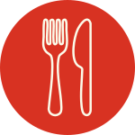

Nuestras especialidades

Rana doble pechuga

Gambas al ajillo

Caracoles a la bordaleza
Tiramisú calabres

¿Dónde nos encontrás?
Camarones 1901, esquina Terreno, La Paternal, CABA
Nuestros horarios:
Jueves y viernes: 20.30 - 00hs
Sábados y domingos: 12.30 - 14.30hs

62 años de historia
Atendido por sus dueños
Preferido del barrio

Hace 1 semana

Vale la pena vivir la experiencia de comer en esta cantina, ubicada en el barrio de La Paternal. Futbolista. Se come increíblemente bien. Y la atencion buenísima.

Hace 1 mes
Amo, tipo bodegón italiano, se especializa en pasta que son de otro planeta. La atención es amable y cordial de esos mozos que saben toda la carta y cada ingrediente. Recomiendo!

Hace 3 meses
Atendido por sus propios dueños y su equipo de mozos de hace muchos años, que saben asesorar muy bien, todo para conocer y probar. Platos abundantes! Muy familiar.